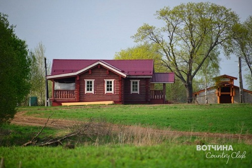

Каждый из нас, в целом, знает свои права и обязанности, чаще всего умеет ими пользоваться и применять их в своей жизни….
Сегодня мы предлагаем вам обратиться к юридическому законодательству в сфере частного землевладения и рассмотреть актуальные темы, которые обсуждаем с покупателями земли в Вотчина Country Club и жителями поселка.
Вот как комментирует наши вопросы Руководитель Управления бухгалтерского, налогового и правового консалтинга Н.А. Козлова.
Тема №1: Можно ли прописаться на купленном участке (доме)?
%20(1).jpg)
«Основным документом, осуществляющим регулирование отношений, возникающих в связи с ведением гражданами садоводства, огородничества и дачного хозяйства, является Федеральный закон от 15.04.1998 N 66-ФЗ «О садоводческих, огороднических и дачных некоммерческих объединениях граждан».
В соответствии со ст. 1 вышеуказанного федерального закона под дачным земельным участком понимается земельный участок, предоставленный гражданину или приобретенный им в целях отдыха (с правом возведения жилого строения без права регистрации проживания в нем или жилого дома с правом регистрации проживания в нем и хозяйственных строений и сооружений, а также с правом выращивания плодовых, ягодных, овощных, бахчевых или иных сельскохозяйственных культур и картофеля).
Отсутствие нормативно определенных видов разрешенного использования земельных участков (коммент.1) на практике привело к установлению различных видов разрешенного использование дачных земельных участков – «для ведения дачного строительства», «для дачного хозяйства» («ведения дачного хозяйства»).
Указание в отношение дачных участков различных видов разрешенного использования также привело к возникновению вопросов о соотношении понятий «для ведения дачного строительства» или «дачного хозяйства» («ведения дачного хозяйства»), а также о возможности возведения на дачном земельном участке с разрешенным использованием «для ведения дачного хозяйства» жилого дома с правом регистрации проживания в нем.
Следует отметить, что в силу совместного Информационного письма Управления Федеральной регистрационной службы по Московской области и Управления Федерального агентства кадастра объектов недвижимости по Московской области от 30.10.2006 N 4 определение разрешенного использования земельного участка «для ведения дачного хозяйства» соответствует разрешенному использованию (назначению) земельного участка «для ведения дачного строительства» или «дачный земельный участок», в связи с чем на дачном земельном участке вне зависимости от указанного вида разрешенного использования собственником может быть возведен жилой дом с правом регистрации проживания в нем.
|  |
{kind=link}
Кроме того, в вопросе регистрации по месту жительства в жилых домах/строениях, расположенных на земельных участках, относящихся к землям сельскохозяйственного назначения, определяющим является правовая позиция, сформулированная Конституционным Судом РФ в Постановлении от 30.06.2011 N 13-П «По делу о проверке конституционности абзаца второго статьи 1 Федерального закона "О садоводческих, огороднических и дачных некоммерческих объединениях граждан" в связи с жалобой гражданина А.В. Воробьева» (коммент.2) .
В частности, Конституционный Суд РФ указал следующее:
«…место жительства гражданина должно быть определено с достаточной точностью не только в целях административного учета во избежание осложнения деятельности органов публичной власти, которые должны располагать достоверной информацией о том, где фактически проживает гражданин, а не где он формально зарегистрирован в силу невозможности регистрации по фактическому месту проживания, но и в целях использования такого правового средства, как регистрация, в качестве юридического факта, встроенного в механизмы правового регулирования в области гражданских, жилищных, семейных и иных правоотношений. Кроме того, поскольку право на свободу выбора места жительства не исключает выбор постоянного места жительства, находящегося за пределами населенных пунктов, и поскольку понятия "место пребывания" и "место жительства" определены в Законе Российской Федерации "О праве граждан Российской Федерации на свободу передвижения, выбор места пребывания и жительства в пределах Российской Федерации" вне привязки к населенному пункту, регистрация граждан, при том что она носит обязательный характер, должна осуществляться независимо от местонахождения соответствующего жилого строения (при условии, что оно пригодно для постоянного проживания).
Отсутствие регистрации по фактическому месту жительства хотя и не является непреодолимым препятствием для реализации гражданином принадлежащих ему прав, но - применительно к конкретным правам и конкретным обстоятельствам - может, с одной стороны, создать такие неудобства в процессе правопользования, требующие дополнительных усилий, которые повлекут ограничения этих прав, несоразмерные конституционно значимым целям, а с другой стороны - привести к нарушению прав и свобод других лиц, что недопустимо в силу статьи 17 (часть 3) Конституции Российской Федерации, и в конечном счете воспрепятствовать созданию условий, обеспечивающих достойную жизнь и свободное развитие человека, на которое направлена политика Российской Федерации как социального государства (статья 7, часть 1, Конституции Российской Федерации)…
Закон Российской Федерации "О праве граждан Российской Федерации на свободу передвижения, выбор места пребывания и жительства в пределах Российской Федерации", осуществляющий регулирование в публично-правовой сфере регистрации граждан по месту пребывания и жительства, не связывает регистрацию ни с определенным имущественным правом на конкретное жилое строение, ни с целевым назначением земельного участка, на котором оно возведено, и, соответственно, не затрагивает гражданско-правовой статус садоводческих, огороднических и дачных некоммерческих объединений…
Вместе с тем собственникам таких земельных участков следует учитывать, что регистрация по месту жительства в расположенных на них пригодных для постоянного проживания жилых строениях не приводит к приобретению соответствующей территорией статуса населенного пункта и, следовательно, не возлагает на органы публичной власти обязанности по ее благоустройству, созданию и поддержанию коммунальной, транспортной и иных инфраструктур, за исключением решения вопросов, непосредственно связанных с осуществлением основных прав и свобод человека и гражданина. Поэтому, выбирая в качестве места жительства жилое строение, расположенное на земельном участке, отнесенном к землям сельскохозяйственного назначения, граждане должны осознанно принимать и те возможные неудобства, которые являются следствием проживания вне территории населенных пунктов.»
Вместе с тем, Конституционный Суд РФ, подтвердив право регистрации по месту жительства в жилых строениях, расположенных на (садовых) земельных участках, относящихся к землям сельскохозяйственного назначения, указал на регистрацию по месту жительства в жилых строениях, которые пригодны для постоянного проживания.
Порядок признания жилого помещения пригодным для проживания утвержден Постановлением Правительства РФ от 28.01.2006 N 47 «Об утверждении Положения о признании помещения жилым помещением, жилого помещения непригодным для проживания и многоквартирного дома аварийным и подлежащим сносу или реконструкции».
Исходя из положений ст. 19 Федерального закона от 15.04.1998 N 66-ФЗ «О садоводческих, огороднических и дачных некоммерческих объединениях граждан» строительство жилого дома на дачном земельном участке осуществляется в соответствии с градостроительными, строительными, экологическими, санитарно-гигиеническими, противопожарными и иными установленными требованиями (нормами, правилами и нормативами).
В соответствии с п.2 ст. 51 Градостроительного кодекса РФ строительство, реконструкция объектов капитального строительства осуществляются на основании разрешения на строительство, за исключением случаев, предусмотренных настоящей статьей.
Согласно п.17 ст. 51 Градостроительного кодекса РФ выдача разрешения на строительство не требуется в случае строительства на земельном участке, предоставленном для ведения садоводства, дачного хозяйства.
При этом в соответствии с п. 1 ст. 25.3 Федерального закона от 21.07.1997 N 122-ФЗ «О государственной регистрации прав на недвижимое имущество и сделок с ним» (далее - Закон о регистрации) основаниями для государственной регистрации прав собственности на создаваемый или созданный объект недвижимого имущества, если для строительства, реконструкции такого объекта недвижимого имущества в соответствии с законодательством Российской Федерации не требуется выдачи разрешения на строительство, являются:
- документы, подтверждающие факт создания такого объекта недвижимого имущества и содержащие его описание;
- документ на земельный участок, на котором расположен такой объект недвижимого имущества (представление правоустанавливающего документа на указанный земельный участок не требуется в случае, если право заявителя на этот земельный участок ранее зарегистрировано в установленном настоящим Федеральным законом порядке).
В соответствии с п. 3 ст. 25.3 Закона о регистрации документом, подтверждающим факт создания объекта недвижимого имущества на предназначенном для ведения дачного хозяйства или садоводства земельном участке либо факт создания гаража или иного объекта недвижимого имущества (если для строительства, реконструкции такого объекта недвижимого имущества не требуется в соответствии с законодательством Российской Федерации выдача разрешения на строительство) и содержащим описание такого объекта недвижимого имущества, является декларация о таком объекте недвижимого имущества по форме, утвержденной Приказом Минэкономразвития России от 03.11.2009 N 447.
В случае создания на земельном участке, предназначенном для ведения садоводства либо дачного хозяйства, объекта недвижимости, пригодного для постоянного проживания, в п. 3 «Назначение объекта» вышеуказанной декларации заполняется ячейка «жилое».
Учитывая вышеизложенное, правовые основания отказа органом, осуществляющем государственную регистрацию прав на недвижимое имущество и сделок с ним, в государственной регистрации права собственности на возведенный на дачном земельном участке жилой дом, а также правовые основания отказа в регистрации по месту жительства в таком жилом доме отсутствуют.
Следует отметить, что до принятия приказа Минэкономразвития России от 03.11.2009 N 447 «Об утверждении формы декларации об объекте недвижимого имущества» форма декларации об объекте недвижимого имущества была утверждена приказом Минэкономразвития РФ от 15.08.2006 N 232, и имела оборотную сторону, согласно графе 2 такой оборотной стороны «Отметка в ячейке, соответствующей строке "Жилой дом с правом регистрации проживания, расположенный на дачном земельном участке", ставится в случае, если произведена регистрация граждан по месту жительства по соответствующему адресу», на основании данной графы 2 оборотной стороны органами, осуществляющими государственную регистрацию прав на недвижимое имущество и сделок с ним, производился отказ в государственной регистрации права собственности на жилой дом в случае, если на момент заполнения декларации не была произведена регистрация граждан по месту жительства по соответствующему адресу.
В настоящее время, принимая во внимание признание недействующим данной графы оборотной стороны утвержденной приказом Минэкономразвития РФ от 15.08.2006 N 232 декларации об объекте недвижимого имущества (Решение Верховного Суда РФ от 17.08.2009 N ГКПИ09-733, Определением Верховного Суда РФ от 05.11.2009 N КАС09-496 указанное решение оставлено без изменения), а также признание в принципе утратившим силу Приказа Минэкономразвития России от 15 августа 2006 г. N 232 «Об утверждении формы декларации об объекте недвижимого имущества», данное правовое основание отказа в регистрации перестало существовать».
Тема №2: Есть ли основания, чтобы отнять у собственника землю сельскохозяйственного назначения?
.jpg) |
«Правовые основания принудительного изъятия у собственника земель сельскохозяйственного назначения предусмотрены ст.ст.284, 285 ГК РФ, ст. 6 Закона об обороте земель сельскохозяйственного назначения.
Изъятие земельного участка, который не используется в соответствии с его целевым назначением. Земельный участок из земель сельскохозяйственного назначения принудительно может быть изъят у его собственника в судебном порядке в случае, если в течение трех и более лет подряд со дня возникновения у такого собственника права собственности на земельный участок он не используется для ведения сельскохозяйственного производства или осуществления иной связанной с сельскохозяйственным производством деятельности. В этот период не включается срок, в течение которого земельный участок не мог быть использован по назначению из-за стихийных бедствий или ввиду иных обстоятельств, исключающих такое использование, а также срок освоения земельного участка. Срок освоения земельного участка из земель сельскохозяйственного назначения не может составлять более чем два года (ст. 284 ГК РФ, пп.4, 5 ст. 6 Закона об обороте земель сельскохозяйственного назначения).
Перечень признаков неиспользования земельных участков для ведения сельскохозяйственного производства или осуществления иной связанной с сельскохозяйственным производством деятельности утвержден Постановлением Правительства РФ от 23.04.2012 N 369 (коммент.3) .
Учитывая, что в отношении земельных участков не определены виды сельскохозяйственных угодий (пашня, сенокос, пастбища, многолетние насаждения), указанные в Постановлении Правительства РФ от 23.04.2012 N 369 перечни признаков неиспользования земельных участков не могут быть применены, за исключением признака закочкаренности и (или) заболачивания свыше 20 процентов площади земельного участка. Таким образом, собственнику дачного земельного участка не следует допускать закочкаренности и (или) заболачивания свыше 20 процентов площади земельного участка.
Изъятие земельного участка, используемого с нарушением законодательства. Земельный участок из земель сельскохозяйственного назначения принудительно может быть изъят у его собственника в судебном порядке в случае, если земельный участок используется с нарушением установленных земельным законодательством требований рационального использования земли, повлекшим за собой существенное снижение плодородия земель сельскохозяйственного назначения или значительное ухудшение экологической обстановки (ст. 285 ГК РФ, п.3 ст. 6 Закона об обороте земель сельскохозяйственного назначения).
Критерии существенного снижения плодородия земель сельскохозяйственного назначения утверждены Постановлением Правительства РФ от 22.07.2011 N 612 (коммент.4) .
Критерии значительного ухудшения экологической обстановки в результате использования земельных участков из земель сельскохозяйственного назначения с нарушением установленных земельным законодательством требований рационального использования земли утверждены Постановлением Правительства РФ от 19.07.2012 N 736 .
В случае недопущения собственником дачного земельного участка существенного снижения плодородия земель сельскохозяйственного назначения или значительного ухудшения экологической обстановки правовые основания изъятия у собственника дачного земельного участка отсутствуют».
.jpg) |
коммент.1: В соответствии с п.2 ст. 7 Земельного кодекса РФ виды разрешенного использования земельных участков определяются в соответствии с классификатором, утвержденным федеральным органом исполнительной власти, осуществляющим функции по выработке государственной политики и нормативно-правовому регулированию в сфере земельных отношений. В настоящее время такой классификатор не утвержден.
коммент.2: В настоящее деле заявитель оспаривал абзац второй статьи 1 Федерального закона "О садоводческих, огороднических и дачных некоммерческих объединениях граждан" в той части, в какой им исключается возможность регистрации граждан по месту жительства в принадлежащих им на праве собственности жилых строениях, которые пригодны для постоянного проживания и расположены на садовых земельных участках, относящихся к землям сельскохозяйственного назначения.
коммент.3: Неиспользование земельного участка определяется на основании одного из следующих признаков:
на пашне не производятся работы по возделыванию сельскохозяйственных культур и обработке почвы;
на сенокосах не производится сенокошение;
на культурных сенокосах содержание сорных трав в структуре травостоя превышает 30 процентов площади земельного участка;
на пастбищах не производится выпас скота;
на многолетних насаждениях не производятся работы по уходу и уборке урожая многолетних насаждений и не осуществляется раскорчевка списанных многолетних насаждений;
залесенность и (или) закустаренность составляет на пашне свыше 15 процентов площади земельного участка;
залесенность и (или) закустаренность на иных видах сельскохозяйственных угодий составляет свыше 30 процентов;
закочкаренность и (или) заболачивание составляет свыше 20 процентов площади земельного участка.
коммент.4: Существенным снижением плодородия земель сельскохозяйственного назначения является изменение числовых значений не менее 3 следующих критериев, причиной которого стало использование земель с нарушением установленных земельным законодательством Российской Федерации требований рационального использования земли:
снижение содержания органического вещества в пахотном горизонте на 15 процентов или более;
снижение кислотности в кислых почвах на 10 процентов или более;
повышение щелочности в щелочных почвах на 10 процентов или более;
снижение содержания подвижного фосфора (мг/кг почвы) на 25 процентов или более;
снижение содержания обменного калия (мг/кг почвы) на 25 процентов или более.
Такими критериями являются:
загрязнение почв химическими веществами, при котором суммарный показатель содержания в почве загрязняющих веществ, концентрация которых превышает установленные для химических веществ нормативы предельно допустимой концентрации, равен или превышает значение 30. Указанный показатель определяется как сумма отношений фактического содержания каждого загрязняющего вещества, концентрация которого превышает установленные для химических веществ нормативы предельно допустимой концентрации, к величине его норматива предельно допустимой концентрации;
размещение отходов производства и потребления 1 - 4 классов опасности в пределах земельного участка на суммарной площади от 0,5 гектара и выше.
Error: Undefined variable: category_text File: /var/www/votchina.su/data/www/votchina.ru/templates/template-news.php (65)